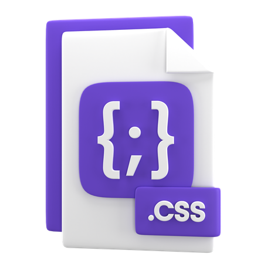

My skills include:
-

- 
-

-

I am a dedicated software engineer with a passion for crafting robust and user-friendly web applications. With over 4 years of hands-on experience in frontend development, specializing in Angular, I have honed my skills in creating dynamic and responsive user interfaces.
Throughout my career, I have successfully delivered projects that leverage Angular's powerful features to enhance user experience and streamline functionality.
My skills include:

Employee life cycle management refers to the process of managing an employee's journey within an organization from recruitment to departureIt typically involves Recruitment and Selection,Onboarding,Performance Management,Development and Training,Offboarding
Project life cycle management refers to the process of overseeing a project from its initiation through planning, execution, and closure. It typically involves Initiation, Planning, Execution, Monitoring and Control and Closure.
An HVAC IoT (Internet of Things) project involves integrating sensors and smart devices into heating, ventilation, and air conditioning systems to enable remote monitoring, control, and optimization.

A water supply management IoT project involves deploying sensors and smart devices across water infrastructure to monitor water quality, consumption levels, and system performance in real-time.